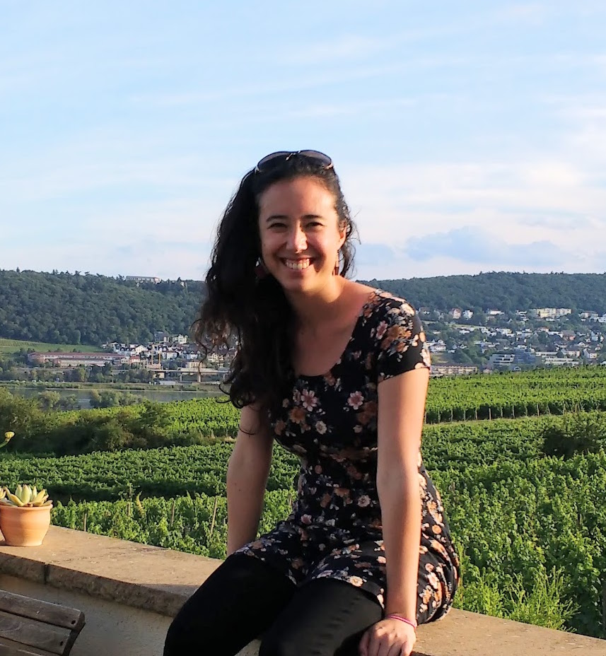

ah@astro.caltech.edu
 CVI am a fourth-year graduate student in Astronomy at Caltech and an NSF Graduate Research Fellow. My advisor is Shri Kulkarni.
I study a rare, extreme class of stellar death: explosions powered by a central engine, like an accreting black hole or a spinning neutron star. For the last half-century, these "engine-driven" explosions have predominantly been discovered using gamma-ray satellites. However, a new generation of wide-field optical surveys (such as the Zwicky Transient Facility, ZTF) are showing us that the landscape of these explosions is more diverse than we had imagined, including members invisible to high-energy detectors (Ho et al. 2018a, Ho et al. 2018b).
I am also interested in developing infrastructure for industrial-scale astronomy. Before coming to Caltech, I spent a year on a Fulbright at the Max Planck Institute for Astronomy (MPIA) in Heidelberg, Germany. There, I worked with Hans-Walter Rix, Melissa Ness, and David Hogg on The Cannon. I used The Cannon to transfer information from a high-S/N, high-resolution survey to low-resolution, noisy spectra, resulting in the largest catalog of stellar masses and ages to-date (Ho et al. 2017a, Ho et al. 2017b).
I obtained my B.S. in Physics at MIT. As an undergraduate, I spent three summers at the National Radio Astronomy Observatory (NRAO). At the NRAO, I worked with Scott Ransom on using millisecond pulsars in the globular cluster Terzan 5 to measure small-scale structure in the magnetic field of the Milky Way.
In the death of a massive star, the core collapses into a black hole and a spherical shock unbinds the outer layers in a core-collapse supernova. In rare cases (0.1%), the rapidly spinning black hole acts as an engine that drives a relativistic bipolar jet, which tunnels through the star and is visible to us as a gamma-ray burst (GRB). Recent evidence suggests that GRBs are just the tip of the iceberg of a much broader landscape of jet and central engine phenomena. This landscape could include jets with a higher baryon loading fraction ("dirty fireballs"), choked jets, and jets that are viewed off-axis.
Undertaking the first census of these phenomena is one of the primary goals of the Zwicky Transient Facility (ZTF). We will address key physical questions such as: How many SNe actually produce central engines? Why do ``classical" GRB jets accelerate only a tiny fraction of their mass? Do low-luminosity GRBs result from jets getting choked within the star? And, finally, how accurate is our understanding of beaming in GRBs?
False positives such as flaring stars and AGN present an impediment to discovering relativistic transients. To address this issue, I conducted a systematic search of the iPTF archive to develop a strategy for mitigation. I have also been using the Very Large Array (VLA) to follow up a mysterious population of short soft X-ray flashes discovered by the Monitor of All-sky X-ray Image (MAXI). The short duration, flux, hardness ratio, and lack of known counterpart to these events makes them promising candidate dirty fireballs.
A new generation of large-scale spectroscopic stellar surveys (e.g. SEGUE, APOGEE, Gaia-ESO) are measuring spectra for millions of stars across the Milky Way. Ideally, each spectrum would be used to "label" the corresponding star with its physical characteristics (e.g. temperature) and physical labels would be independent of the pipeline used to measure them. However, in practice, survey pipelines measure inconsistent labels for the same stars, because their methodologies are sensitive to properties that differ between surveys (e.g. wavelength range and resolution).
The Cannon is a data-driven approach to spectral modeling that can be used to bring two discrepant surveys onto the same scale. The Cannon requires no physical models, is very fast, and achieves comparable accuracy to existing survey pipelines but with significantly lower SNR spectra. It relies only on the existence of a subset of objects within a survey for which the corresponding labels are known and sufficiently cover the label space of interest.
By using The Cannon to reanalyze the LAMOST spectra of 450,000 giants, my work resulted in the largest catalog to-date of stellar masses, ages, and individual abundances (alpha enhancement, carbon, and nitrogen). I also wrote a version of The Cannon for use by the community, along with detailed documentation and two tutorials.
Our position within the Milky Way gives us a unique vantage point: we can measure the galactic magnetic field shape and structure over several orders of magnitude, ranging from parsec to several parsec scales. The dense millisecond pulsar (MSP) populations in globular clusters (GCs) provide a unique opportunity to measure and map the galactic magnetic field on small (pc) scales, using the Faraday rotation technique.
The globular cluster Terzan 5 has the highest-known population of MSPs: radio flux measurements predict a much higher total than the current population of 35. Ransom (2007) used timing solutions for each MSP to calculate precise positions and precise DMs to demonstrate that differences in DM are dominated by electron density fluctuations in the ISM, rather than within the cluster.
As a summer student at the NRAO (a program funded by the NSF) I used nearly five full days of 1.5 GHz and 2 GHz Green Bank Telescope data to calculate precise rotation measures (RMs) for 24 of the 35 millisecond pulsars in Terzan 5. Dividing these values by the corresponding DMs enabled me to measure the mean line-of-sight galactic magnetic field strength to each pulsar. I found a 15-20% gradient in line-of-sight magnetic field strength across the cluster with fluctuations on the order of 0.1 microGauss and measured a structure function power law index of alpha = 1.13 +/- 0.15.
4 lead-author, 12 co-author
Ho, A. Y. Q., Phinney, E. S., Ravi, V., Kulkarni, S. R. et al. 2018, AT2018cow: a luminous millimeter transient, arXiv:1810.10880. Featured in Nature News and Scientific American.
Ho, A. Y. Q., Kulkarni, S.R., Nugent, P. E. et al. 2018, iPTF Archival Search for Fast Optical Transients, ApJ, 854, 13 arXiv:1712.00949
Ho, A. Y. Q., Rix, H.-W., Ness, M. K., Hogg, D. W., et al. 2017, Masses and Ages for 230,000 LAMOST Giants, via Their Carbon and Nitrogen Abundances, ApJ, 841, 40 arXiv:1609.03195
Ho, A. Y. Q., Ness, M. K., Hogg, D. W., et al. 2017, Label Transfer from APOGEE to LAMOST: Precise Stellar Parameters for 450,000 LAMOST Giants, ApJ, 836, 5 arXiv:1602.00303
Perley, D. A. et al. (including Ho, A. Y. Q.) 2018, The Fast, Luminous Ultraviolet Transient AT2018cow: Extreme Supernova, or Disruption of a Star by an Intermediate-Mass black Hole?, submitted to MNRAS, arXiv:1808.00969
Kemp, A. J., et al. (including Ho, A. Y. Q.) 2018, On the discovery of K-enhanced and possibly Mg-depleted stars throughout the Milky Way published in MNRAS, arXiv:1807:05693
Adams, S. M., et al. (including Ho, A. Y. Q.) 2017, iPTF Survey for Cool Transients, submitted to PASP, arXiv:1711.10501
Guglielmo, M., Lane, R. R., Conn, Blair C., Ho, A. Y. Q. et al. 2017, On the Origin of the Monoceros Ring - I: Kinematics, proper motions, and the nature of the progenitor, accepted by MNRAS, arXiv:1711.06682
Abbott, B. P., et al. (including Ho, A. Y. Q.) 2017, Multi-messenger Observations of a Binary Neutron Star Merger, ApJ,848,12 arXiv:1710.05833
Kasliwal, M. M., et al. (including Ho, A. Y. Q.) 2017, Illuminating Gravitational Waves: A Concordant Picture of Photons from a Neutron Star Merger, accepted by Science, arXiv:1710.05436
Hallinan, G., et al. (including Ho, A. Y. Q.) 2017, A Radio Counterpart to a Neutron Star Merger, accepted by Science, arXiv:1710.05435
Ting, Y.-S., Rix, H.-W., Conroy, C., Ho, A. Y. Q., & Lin, J. 2017, Measuring 14 elemental abundances with R=1,800 LAMOST spectra, ApJ, 849, 9 arXiv:1708.01758
Blagorodnova, N., et al. (including Ho, A. Y. Q.) 2017, iPTF16fnl: a faint and fast tidal disruption event in an E+A galaxy, ApJ, 844, 46 arXiv:1703.00965
Casey, A. R., Hogg, D. W., Ness, M., Rix, H.-W., Ho, A. Y. Q., Gilmore, G. 2016 The Cannon 2: A data-driven model of stellar spectra for detailed chemical abundance analyses , submitted to ApJ, arXiv:1603.03040
Ness, M., Hogg, D. W., Rix, H.-W., Martig, M., Pinsonneault, M. H., Ho, A. Y. Q. 2016, Spectroscopic Determination of Masses (and Implied Ages) for Red Giants, ApJ, 823, 114 arXiv:1511.08204
Hogg, D. W., Casey, A. R., Ness, M., Rix, H.-W., Foreman-Mackey, D., Hasselquist, S., Ho, Anna Y. Q. et al. 2016, Chemical tagging can work: Identification of stellar phase-space structures purely by chemical-abundance similarity, ApJ, 833, 262 arXiv:1601.05413
Ness, M., Hogg, D.W., Rix, H-W., Ho, A. Y. Q., Zasowski, G. 2015, The Cannon: A data-driven approach to stellar label determination, ApJ, 808, 16 arXiv:1501.07604
I enjoy public speaking, and have given numerous talks at academic conferences and at our department's journal club, as well as for the general public. On invitation, I taught a 2-day workshop on using The Cannon at Gemini Observatory in La Serena, Chile: I gave a talk and led a series of hands-on sessions, guiding the participants through Jupyter notebooks and datasets that I prepared.
This section lists my talks for the astronomy community. You can click here to see my talks for a general audience.
Dirty Fireballs and Orphan Afterglows:
A Broader Landscape of Relativistic Explosions
Presented Oct 2017 at the GROWTH Annual Meeting in Milwaukee, WI
The Cannon: Data-Driven Spectral Modeling in the Era of
Large Stellar Surveys
Presented at 5 international conferences (1 invited, 4 contributed)
Rotation Measures of Globular Cluster Pulsars as a
Unique Probe of the Galactic Magnetic Field
Presented at the MPIA Galaxy Coffee (Heidelberg)
and the NRAO lunch seminar (Socorro)
Towards a complete redshift catalog for galaxies in the Local Universe
(Kulkarni et al. 2017, Cook et al. 2017)
Presented on 21 October 2017
A tale of 115 photons: "A New, Faint Population of X-ray Transients"
(Bauer et al. 2017)
Presented on 14 April 2017
Ultraluminous X-Ray Bursts: A Challenge to High-Energy
Astrophysics Lore (Irwin et al. 2016)
Presented on 4 November 2016
Recognized as one of three "outstanding TAs" by the Office of Graduate Studies and the Registrar's Office. From the Registrar Newsletter: "Students described Anna as caring, considerate, and committed... as well as being extremely effective at explaining and summarizing the course material. The sentiments in this quote were echoed by several other students: 'She was consistently well-prepared for section, gave really good notes, and did a really good job of explaining potentially confusing material and clarifying misunderstandings. She was very in-tune with the difficulties students were having and did a very good job of resolving those difficulties.'"
I am the Vice President of Science and Engineering Policy at Caltech (SEPAC), and the Science Policy Chair for the Graduate Student Council.